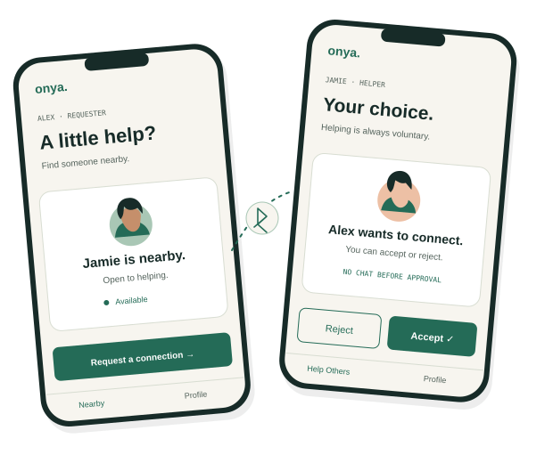

Onya
REQUESTER · ALEX
A little help?
Find someone nearby who’s open to helping.
Start with someone nearby.
Jamie has chosen to be available.
NearbyProfile
GOOD ON YOU FOR HELPING
For the moment campus Wi-Fi disappears, but the people around you haven’t. Onya lets you ask a nearby volunteer for help through a local text chat.
Nearby text chat over Bluetooth Low Energy.
Voluntary help. A connection by choice.

“I sometimes lose campus Wi-Fi while working. When I need something, I’m stuck—even though people nearby may be able and willing to help.”The thought behind Onya.
01 / THE HUMAN DECISION
The broader ambition is practical help. The app today makes the first connection: nearby people, a request, and an approved text conversation.
A helper chooses to make themselves discoverable to people nearby.
A requester discovers a helper and sends a connection request.
Accept or reject. Only after acceptance can the two people exchange text.
02 / WALK THROUGH THE CONNECTION
Follow the connection from discovery to a conversation. You get to make the helper’s decision.
Illustrative simulation — no Bluetooth connection is made.
REQUESTER · ALEX
Find someone nearby who’s open to helping.
Start with someone nearby.
Jamie has chosen to be available.
HELPER · JAMIE
You choose when to connect.
Help Others is on.
Available to people nearby.
No conversation has started.
Jamie is available. Alex can look for a nearby helper.
Alex and Jamie are fictional. This is an explanation of the flow, not a recorded app demonstration.
03 / THE ENGINEERING
Flutter handles the interface and conversation state. Native Bluetooth adapters handle discovery and direct peer-to-peer message transport.
Direct, nearby text exchange
Small messages, clear boundaries. The shared message envelope has a 256-byte limit. The native adapters frame the bytes for BLE and use acknowledgements for transfer handling.
Availability on Android. A foreground service supports helper availability and request notifications while the UI is detached. A background request reached the helper in our controlled check. Background chat delivery failed and needs follow-up; availability is not guaranteed.
Both nearby people need Onya installed beforehand. This connection does not give the requester Internet access. Automatic ordering, ride booking, Internet relay and a structured task system are not implemented.
04 / SECURITY BY BOUNDARY
We reviewed the actual chat path and hardened the places where trust changes—not hypothetical future features.
Implemented Android controls on the Security branchApproval checks gate chat. Connection requests stay stable, and decisions must match the current request.
Current-connection matching and stale-event guards stop an old approval or message from changing a replacement conversation.
The newest 300 chat messages stay in memory. Receive and GATT queues are bounded, encrypted counters reject replays, and cleanup, timeouts and notification cooldowns limit queued work.
The limits matter, too. The selected Android build uses X25519 key exchange and AES-GCM chat encryption. Its key exchange does not authenticate the peer, and names are self-asserted. Actual Bluetooth link encryption and authentication remain unverified.
05 / EVIDENCE, NOT PROMISES
Implemented controls and verified behavior are different things. Here’s the recorded evidence, with the remaining checks kept visible.
Analysis passed, too. Tests cover consent, encrypted messages, tampering, replay, session replacement and bounded work. They do not prove Bluetooth radio security.
Read the current verification recordTwo Android phones running the side-by-side Security debug build exchanged synthetic text in both directions. A newly approved chat opened empty, and foreground End Chat notified the other phone.
A background request arrived, but background chat delivery failed with a GATT error. Rejection kept chat closed but showed a Bluetooth error. These checks are not counted as passes.
Which build is this? Android claims refer to Security source 8bf78e2, version 0.0.1 (code 1), including the committed shared/Android UI from upstream 0d4e2c4. Phone checks used a separately signed, side-by-side debug package, preserving the original apps. A separately rebuilt debug test APK is available below; it is not production-signed.
Reports are pinned to commits and copied locally for presentation. The website does not rerun mobile tests. Radio security, active peer impersonation, exhaustive storage/backups and practical flooding are not verified. Evidence sources & exact commits
Planned, not delivered before submission: We intended to complete iOS-to-iOS integration. The merge failed, and debugging it consumed time in the submission window, so that integration was not completed or verified. It is not part of the working Android demo.
GOOD ON YA. THAT’S THE IDEA.
Onya is inspired by “good on ya”—recognizing the person who chooses to help. A little connection can be a good place to start.
Explore the projectVersion 0.0.1 (code 1) · debug-signed · 149 MiB
Built from Security Android source 8bf78e2. App label and side-by-side test package ID were applied by a temporary build overlay; mobile source was not edited.
Download Onya Android test APK (.apk)Install on Android 12 or newer. If Android asks, allow your browser or file manager to install this APK. It installs as a separate test app named Onya. Both nearby people need the same app installed. This is a debuggable, debug-signed test build, not a production release. The APK is about 149 MiB.
Known test limits: foreground approval, chat and reconnect checks passed on two owned phones using the same Security source. The distributed relabelled APK has not itself been re-tested on phones. Background chat delivery failed and rejection showed a Bluetooth error. Bluetooth link authentication remains unverified.